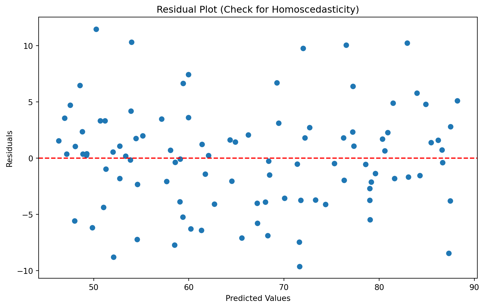
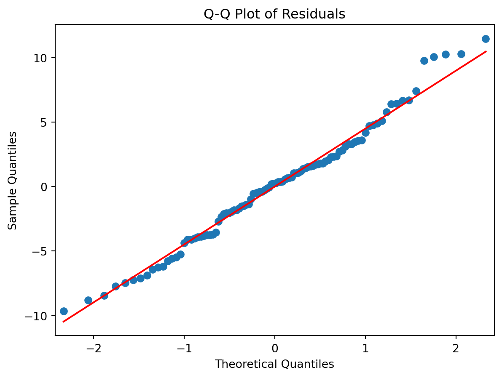

Chapter 6: Regression Analysis
Simple Linear Regression
Definition
Simple linear regression is a method to model the relationship between a dependent variable (\(y\)) and a single independent variable (\(x\)) using a straight line. It aims to predict the value of \(y\) based on the value of \(x\).
Least Squares Estimation
Definition
Least squares estimation is a method to find the best-fit line by minimising the sum of the squares of the residuals (the differences between observed and predicted values).
Formula
\[ y = \beta_0 + \beta_1x + \epsilon \] where \(\beta_0\) is the intercept, \(\beta_1\) is the slope, and \(\epsilon\) is the error term.
Example
Predicting a student’s exam score based on the number of study hours. If we have data points of hours studied and corresponding exam scores, we can fit a line to model this relationship and make predictions for new values.
Assumptions of Linear Regression
Linearity: The relationship between the dependent and independent variables is linear. For example, the relationship between height and weight is often linear within certain ranges.
Independence: Observations are independent of each other. For instance, the scores of students in different classrooms should not influence each other.
Homoscedasticity: The variance of residuals is constant across all levels of the independent variable. This means the spread of residuals should be similar at all values of \(x\). For example, the variability in house prices should be similar across different levels of house size.
Normality: Residuals are normally distributed. This can be checked using Q-Q plots to ensure the residuals follow a straight line. For instance, the residuals from predicting income based on education level should be normally distributed.
R-squared and Adjusted R-squared
R-squared
Definition
R-squared is a measure of the proportion of variance in the dependent variable that is predictable from the independent variable.
Formula
\[ R^2 = 1 - \frac{\sum (y_i - \hat{y}_i)^2}{\sum (y_i - \bar{y})^2} \]
Example
An \(R^2\) of 0.8 means that 80% of the variance in the dependent variable is explained by the independent variable. For instance, if we are predicting house prices based on square footage, an \(R^2\) of 0.8 indicates that 80% of the variation in house prices can be explained by the square footage.
Adjusted R-squared
Definition
Adjusted R-squared is a modified version of R-squared that adjusts for the number of predictors in the model.
Formula
\[ \text{Adjusted } R^2 = 1 - \left( \frac{(1-R^2)(n-1)}{n-p-1} \right) \]
Example
Adjusted \(R^2\) is used to compare models with different numbers of predictors. For example, when adding more variables to predict house prices, Adjusted \(R^2\) helps determine if the new model with more variables is actually better.
Show the code
import numpy as np
import pandas as pd
import matplotlib.pyplot as plt
from scipy import stats
import seaborn as sns
from sklearn.linear_model import LinearRegression
from sklearn.metrics import r2_score
from statsmodels.stats.stattools import jarque_bera
from statsmodels.graphics.gofplots import qqplot
# Set random seed for reproducibility
np.random.seed(42)
# Generate sample data
hours_studied = np.random.uniform(1, 10, 100)
noise = np.random.normal(0, 5, 100)
exam_scores = 40 + 5 * hours_studied + noise
# Create a DataFrame
df = pd.DataFrame({'Hours_Studied': hours_studied, 'Exam_Score': exam_scores})
# Perform simple linear regression
X = df[['Hours_Studied']]
y = df['Exam_Score']
model = LinearRegression()
model.fit(X, y)
# Print coefficients
print(f"Intercept (β0): {model.intercept_:.2f}")
print(f"Slope (β1): {model.coef_[0]:.2f}")
# Make predictions
y_pred = model.predict(X)
# Calculate R-squared
r_squared = r2_score(y, y_pred)
print(f"R-squared: {r_squared:.4f}")
# Calculate Adjusted R-squared
n = len(y)
p = X.shape[1]
adjusted_r_squared = 1 - (1 - r_squared) * (n - 1) / (n - p - 1)
print(f"Adjusted R-squared: {adjusted_r_squared:.4f}")
# Visualize the regression line
plt.figure(figsize=(10, 6))
plt.scatter(X, y, alpha=0.5)
plt.plot(X, y_pred, color='red', linewidth=2)
plt.xlabel('Hours Studied')
plt.ylabel('Exam Score')
plt.title('Simple Linear Regression: Exam Score vs. Hours Studied')
plt.show()
# Check assumptions
# 1. Linearity (already visualized in the scatter plot above)
# 2. Independence (assumed based on data collection method)
# 3. Homoscedasticity
residuals = y - y_pred
plt.figure(figsize=(10, 6))
plt.scatter(y_pred, residuals)
plt.xlabel('Predicted Values')
plt.ylabel('Residuals')
plt.title('Residual Plot (Check for Homoscedasticity)')
plt.axhline(y=0, color='r', linestyle='--')
plt.show()
# 4. Normality of residuals
plt.figure(figsize=(10, 6))
qqplot(residuals, line='s')
plt.title('Q-Q Plot of Residuals')
plt.show()
# Jarque-Bera test for normality
jb_results = jarque_bera(residuals)
jb_statistic, jb_pvalue = jb_results[0], jb_results[1]
print(f"Jarque-Bera test statistic: {jb_statistic:.4f}")
print(f"Jarque-Bera test p-value: {jb_pvalue:.4f}")
# Predict exam score for a new value
new_hours_studied = np.array([[8]])
predicted_score = model.predict(new_hours_studied)
print(f"Predicted exam score for 8 hours of study: {predicted_score[0]:.2f}")Intercept (β0): 41.33
Slope (β1): 4.74
R-squared: 0.8879
Adjusted R-squared: 0.8868
<Figure size 960x576 with 0 Axes>
Jarque-Bera test statistic: 0.8079
Jarque-Bera test p-value: 0.6677
Predicted exam score for 8 hours of study: 79.29/Users/ravishankar/miniforge3/lib/python3.10/site-packages/sklearn/base.py:439: UserWarning:
X does not have valid feature names, but LinearRegression was fitted with feature names
Multiple Linear Regression
Definition
Multiple linear regression is a method to model the relationship between a dependent variable and multiple independent variables. It extends simple linear regression by using two or more predictors to estimate the dependent variable.
Formula
\[ y = \beta_0 + \beta_1x_1 + \beta_2x_2 + \cdots + \beta_nx_n + \epsilon \]
Example
Predicting a student’s exam score based on multiple factors like hours studied, attendance rate, and number of practice tests taken. For instance, a model could use these predictors to estimate the final exam score more accurately than using just one predictor.
Multicollinearity
Definition
Multicollinearity occurs when independent variables in a regression model are highly correlated with each other. This makes it difficult to determine the individual effect of each predictor on the dependent variable.
Consequences
- Inflated standard errors, making it difficult to determine the effect of each predictor.
- Unstable estimates of regression coefficients, which can vary greatly with slight changes in the model or data.
Detection
- Variance Inflation Factor (VIF): Measures how much the variance of a regression coefficient is inflated due to multicollinearity.
- High correlation coefficients: High pairwise correlations between independent variables indicate multicollinearity.
Example
Including both weight and BMI in a regression model to predict health outcomes can lead to multicollinearity because these variables are highly correlated.
Heteroscedasticity
Definition
Heteroscedasticity occurs when the variance of the residuals is not constant across all levels of the independent variables. This violates the assumption of homoscedasticity.
Consequences
- Inefficiency of estimates, leading to suboptimal predictions.
- Invalid hypothesis tests, affecting the reliability of confidence intervals and p-values.
Detection
- Breusch-Pagan test: Tests for the presence of heteroscedasticity.
- White test: A general test for heteroscedasticity that does not rely on a specific form of heteroscedasticity.
Example
Modelling income based on years of education, where the variability of income increases with more education, can lead to heteroscedasticity. This means higher education levels may have more varied income levels.
Autocorrelation
Definition
Autocorrelation occurs when the residuals are correlated with each other, often occurring in time series data. This violates the assumption of independence of residuals.
Consequences
- Inefficiency of estimates, reducing the precision of the regression coefficients.
- Invalid hypothesis tests, leading to incorrect inferences.
Detection
- Durbin-Watson test: Tests for the presence of autocorrelation in the residuals.
- Ljung-Box test: A general test for autocorrelation at multiple lags.
Example
Time series data, where past values influence future values, can exhibit autocorrelation. For example, predicting stock prices based on past performance.
Show the code
import numpy as np
import pandas as pd
import matplotlib.pyplot as plt
from sklearn.linear_model import LinearRegression
from sklearn.model_selection import train_test_split
from sklearn.metrics import mean_squared_error, r2_score
from statsmodels.stats.outliers_influence import variance_inflation_factor
from statsmodels.stats.diagnostic import het_breuschpagan
from statsmodels.stats.stattools import durbin_watson
import statsmodels.api as sm
# Generate sample data
np.random.seed(0)
n_samples = 100
X1 = np.random.rand(n_samples)
X2 = 0.5 * X1 + 0.5 * np.random.rand(n_samples) # Introducing some correlation
X3 = np.random.rand(n_samples)
y = 2 * X1 + 3 * X2 + 1.5 * X3 + np.random.normal(0, 0.1, n_samples)
# Create a DataFrame
df = pd.DataFrame({'X1': X1, 'X2': X2, 'X3': X3, 'y': y})
# Split the data
X = df[['X1', 'X2', 'X3']]
y = df['y']
X_train, X_test, y_train, y_test = train_test_split(X, y, test_size=0.2, random_state=42)
# Fit the model
model = LinearRegression()
model.fit(X_train, y_train)
# Make predictions
y_pred = model.predict(X_test)
# Evaluate the model
mse = mean_squared_error(y_test, y_pred)
r2 = r2_score(y_test, y_pred)
print(f"Mean Squared Error: {mse}")
print(f"R-squared: {r2}")
# Check for multicollinearity
def calculate_vif(X):
vif_data = pd.DataFrame()
vif_data["feature"] = X.columns
vif_data["VIF"] = [variance_inflation_factor(X.values, i) for i in range(X.shape[1])]
return vif_data
print("\nVariance Inflation Factors:")
print(calculate_vif(X))
# Check for heteroscedasticity
model_sm = sm.OLS(y, sm.add_constant(X)).fit()
_, p_value, _, _ = het_breuschpagan(model_sm.resid, model_sm.model.exog)
print(f"\nBreusch-Pagan test p-value: {p_value}")
# Check for autocorrelation
dw_statistic = durbin_watson(model_sm.resid)
print(f"\nDurbin-Watson statistic: {dw_statistic}")
# Visualize residuals
plt.figure(figsize=(10, 6))
plt.scatter(model_sm.fittedvalues, model_sm.resid)
plt.xlabel("Fitted values")
plt.ylabel("Residuals")
plt.title("Residual Plot")
plt.show()Mean Squared Error: 0.011712328380179804
R-squared: 0.990021330177989
Variance Inflation Factors:
feature VIF
0 X1 7.163849
1 X2 8.731192
2 X3 2.569448
Breusch-Pagan test p-value: 0.4392736984236715
Durbin-Watson statistic: 2.4044896301384426Polynomial Regression
Definition
Polynomial regression is a regression model that fits a polynomial equation to the data, allowing for non-linear relationships between the dependent and independent variables.
Formula
\[ y = \beta_0 + \beta_1x + \beta_2x^2 + \cdots + \beta_nx^n + \epsilon \]
Example
Modelling the relationship between the dosage of a drug and its effect, where the effect is not linear. For example, a small increase in dosage might have a large effect at low doses but a smaller effect at higher doses.
Show the code
import numpy as np
import matplotlib.pyplot as plt
from sklearn.preprocessing import PolynomialFeatures
from sklearn.linear_model import LinearRegression
from sklearn.metrics import mean_squared_error, r2_score
from sklearn.model_selection import train_test_split
# Generate sample data
np.random.seed(0)
X = np.sort(5 * np.random.rand(80, 1), axis=0)
y = np.sin(X).ravel() + np.random.normal(0, 0.1, X.shape[0])
# Split the data into training and testing sets
X_train, X_test, y_train, y_test = train_test_split(X, y, test_size=0.2, random_state=42)
# Create polynomial features
degrees = [1, 2, 3, 5]
plt.figure(figsize=(14, 10))
for i, degree in enumerate(degrees):
ax = plt.subplot(2, 2, i + 1)
poly_features = PolynomialFeatures(degree=degree, include_bias=False)
X_poly_train = poly_features.fit_transform(X_train)
X_poly_test = poly_features.transform(X_test)
# Fit the model
model = LinearRegression()
model.fit(X_poly_train, y_train)
# Make predictions
y_pred = model.predict(X_poly_test)
# Evaluate the model
mse = mean_squared_error(y_test, y_pred)
r2 = r2_score(y_test, y_pred)
print(f"Degree {degree}:")
print(f"Mean Squared Error: {mse:.4f}")
print(f"R-squared: {r2:.4f}\n")
# Plot the results
X_plot = np.linspace(0, 5, 100).reshape(-1, 1)
y_plot = model.predict(poly_features.transform(X_plot))
plt.scatter(X_test, y_test, color='b', label='Test data')
plt.plot(X_plot, y_plot, color='r', label='Polynomial regression')
plt.xlabel('X')
plt.ylabel('y')
plt.title(f'Polynomial Regression (Degree {degree})')
plt.legend()
plt.tight_layout()
plt.show()Degree 1:
Mean Squared Error: 0.2885
R-squared: 0.3927
Degree 2:
Mean Squared Error: 0.0770
R-squared: 0.8380
Degree 3:
Mean Squared Error: 0.0129
R-squared: 0.9728
Degree 5:
Mean Squared Error: 0.0082
R-squared: 0.9827
Logistic Regression
Definition
Logistic regression is a regression model used when the dependent variable is binary (i.e., it has two possible outcomes). It estimates the probability of an event occurring based on one or more predictor variables.
Formula
\[ \log \left( \frac{p}{1-p} \right) = \beta_0 + \beta_1x_1 + \cdots + \beta_nx_n \] where \(p\) is the probability of the event occurring.
Binary Logistic Regression
Definition
Binary logistic regression is a type of logistic regression where the dependent variable has two possible outcomes, such as success/failure, yes/no, or presence/absence.
Example
Predicting whether a student passes or fails an exam based on study hours, attendance, and previous grades.
Multinomial Logistic Regression
Definition
Multinomial logistic regression is used when the dependent variable has more than two categories. It extends binary logistic regression to handle multiple outcome categories.
Example
Predicting the type of cuisine a person will choose among several options, such as Italian, Chinese, or Mexican, based on demographic and preference data.
Ordinal Logistic Regression
Definition
Ordinal logistic regression is used when the dependent variable is ordinal, meaning the categories have a natural order but no fixed interval between them.
Example
Predicting a customer’s satisfaction level (e.g., satisfied, neutral, dissatisfied) based on service attributes like response time, friendliness, and problem resolution.
Odds Ratios
Definition
Odds ratios measure the association between an exposure and an outcome. They compare the odds of the outcome occurring in the presence of the exposure to the odds of it occurring without the exposure.
Formula
\[ \text{OR} = \frac{p/(1-p)}{q/(1-q)} \] where \(p\) is the probability of the event in the exposed group and \(q\) is the probability in the unexposed group.
Example
An OR of 2 means the event is twice as likely in the exposed group compared to the unexposed group. For example, if the odds of developing a condition are twice as high in smokers as in non-smokers, the OR is 2.
Maximum Likelihood Estimation (MLE)
Definition
Maximum Likelihood Estimation (MLE) is a method to estimate the parameters of a logistic regression model by maximising the likelihood function, which represents the probability of the observed data given the model parameters.
Procedure
- Define the likelihood function based on the observed data.
- Find the parameter values that maximise the likelihood function.
Example
Estimating the probability of disease based on patient characteristics, such as age, gender, and medical history, using logistic regression. MLE is used to find the best-fitting model parameters.
Regularization Techniques
Lasso (L1)
Definition
Lasso (Least Absolute Shrinkage and Selection Operator) is a regularization technique that adds a penalty equivalent to the absolute value of the magnitude of coefficients to the loss function. It can shrink some coefficients to zero, effectively selecting a simpler model with fewer predictors.
Example
Used to encourage sparsity in models by shrinking some coefficients to zero. For example, in a model predicting house prices, Lasso can help select a subset of important features by shrinking the coefficients of less important ones to zero, such as less influential factors like the color of the house.
Ridge (L2)
Definition
Ridge regression adds a penalty equivalent to the square of the magnitude of coefficients to the loss function. Unlike Lasso, Ridge regression does not shrink coefficients to zero but reduces their magnitude, preventing overfitting by discouraging complex models.
Example
Used to prevent overfitting by shrinking the coefficients. For instance, in a model predicting sales based on advertising spend in various media, Ridge regression can reduce the impact of less important media types without eliminating them.
Elastic Net
Definition
Elastic Net is a regularization technique that combines both L1 (Lasso) and L2 (Ridge) penalties. It balances the benefits of both methods, encouraging sparsity and reducing the impact of correlated predictors.
Example
Used when there are multiple correlated features. For example, in a model predicting health outcomes based on various lifestyle factors, Elastic Net can handle correlated variables like diet and exercise, providing a more stable and interpretable model.
Generalized Linear Models (GLMs)
Poisson Regression
Definition
Poisson regression is a type of GLM used for modelling count data, where the response variable represents counts of events occurring within a fixed interval.
Example
Modelling the number of customer complaints received per day. For instance, a call center might use Poisson regression to predict the number of daily complaints based on factors like call volume and time of day.
Negative Binomial Regression
Definition
Negative binomial regression is a type of GLM used for over-dispersed count data, where the variance exceeds the mean. It is an extension of Poisson regression that accounts for extra variability.
Example
Modelling the number of accidents occurring at a factory, where variance exceeds the mean. For example, a factory might use negative binomial regression to predict accident counts based on hours worked and safety measures, accounting for over-dispersion in the data.
Gamma Regression
Definition
Gamma regression is a type of GLM used for modelling continuous, positive-skewed data. It is suitable for response variables that are positively skewed and strictly positive.
Example
Modelling the time until a machine breaks down. For instance, a manufacturing plant might use gamma regression to predict the time to failure of equipment based on maintenance schedules and operating conditions.
Non-linear Regression
Definition
Non-linear regression models non-linear relationships between the independent and dependent variables. Unlike linear regression, it can capture more complex patterns in the data.
Formula
\[ y = f(x, \beta) + \epsilon \] where \(f\) is a non-linear function.
Example
Modelling the growth rate of bacteria, where growth follows a logistic curve. For instance, a biologist might use non-linear regression to model bacterial growth over time, capturing the initial exponential growth and eventual plateau.
Nonlinear Least Squares
Definition
Nonlinear least squares is a method to estimate the parameters of a non-linear model by minimising the sum of the squares of the residuals.
Example
Fitting a logistic growth model to population data. For example, a researcher might use nonlinear least squares to estimate the parameters of a logistic growth curve for a population of animals in a confined habitat.
Generalized Additive Models (GAMs)
Definition
Generalized Additive Models (GAMs) are a flexible generalisation of linear models that allow for non-linear relationships through the use of smoothing functions. GAMs can model complex, non-linear relationships while retaining interpretability.
Example
Modelling the effect of temperature on crop yield, where the relationship is non-linear. For instance, an agricultural scientist might use GAMs to model how temperature variations throughout the growing season affect crop yield, allowing for non-linear effects.
Quantile Regression
Definition
Quantile regression is a type of regression that estimates the conditional quantiles of the response variable, providing a more complete view of possible outcomes beyond the mean.
Example
Modelling the median house price based on various predictors. For example, a real estate analyst might use quantile regression to estimate the 25th, 50th (median), and 75th percentile house prices based on factors like location, size, and age of the property.
Robust Regression
Definition
Robust regression methods are designed to be less sensitive to outliers and violations of assumptions, providing reliable estimates even when standard regression methods fail.
M-estimators
Definition
M-estimators are a general class of estimators that are solutions to minimising a sum of a chosen function of the residuals. They are used in robust regression to reduce the influence of outliers.
Example
Using Huber loss to reduce the influence of outliers in a regression model predicting employee performance based on hours worked and job satisfaction. The Huber loss function provides a balance between least squares and absolute value loss, making the model more robust to outliers.
Least Trimmed Squares
Definition
Least Trimmed Squares (LTS) is a robust regression technique that minimises the sum of the smallest squared residuals, effectively ignoring the largest residuals that may be outliers.
Example
Fitting a model to data with outliers by excluding the largest residuals. For instance, in a study measuring the effect of medication on blood pressure, LTS can help fit a model that is not unduly influenced by extreme outliers in the data.
Stepwise Regression
Definition
Stepwise regression is a method of fitting regression models in which the choice of predictive variables is carried out by an automatic procedure. It involves adding or removing predictors based on statistical criteria like AIC or BIC.
Example
Selecting variables in a stepwise manner based on statistical criteria to predict housing prices. For instance, a model might start with an empty set of predictors and add significant predictors like square footage and number of bedrooms, while removing less significant predictors.
Principal Component Regression
Definition
Principal Component Regression (PCR) is a regression technique that uses principal component analysis (PCA) to reduce the dimensionality of the predictor space before fitting a linear regression model. It is useful for handling multicollinearity and high-dimensional data.
Example
Predicting wine quality using principal components derived from chemical properties. For instance, a winemaker might use PCR to reduce the dimensionality of data on various chemical compounds in wine and predict overall wine quality.
Partial Least Squares Regression
Definition
Partial Least Squares (PLS) regression is a technique that finds the linear regression model by projecting the predictors and the response variables to a new space. It is particularly useful when predictors are highly collinear or when the number of predictors exceeds the number of observations.
Example
Modelling the relationship between spectral data and chemical concentrations. For example, a chemist might use PLS regression to relate spectral data from a substance to its chemical composition, handling the high collinearity of spectral data.
Isotonic Regression
Definition
Isotonic regression is a non-parametric regression technique that fits a non-decreasing function to the data. It is used when there is an order or ranking in the data that should be preserved in the model.
Example
Modelling dose-response relationships in pharmacology. For instance, a pharmacologist might use isotonic regression to model the relationship between drug dosage and patient response, ensuring that higher doses do not produce lower responses.
Segmented Regression
Definition
Segmented regression, also known as piecewise regression, is a type of regression that fits multiple linear segments to the data. It is used to identify changes in the relationship between the independent and dependent variables at specific points, called breakpoints.
Example
Modelling the effect of a policy change at a specific point in time. For instance, an economist might use segmented regression to analyse the impact of a new tax policy on consumer spending, identifying the point at which the policy was implemented and its effect on the trend.
Multivariate Regression
Definition
Multivariate regression is a method to model the relationship between multiple dependent variables and multiple independent variables. It extends multiple linear regression to handle multiple outcomes simultaneously.
Example
Predicting multiple health outcomes based on lifestyle factors. For instance, a public health researcher might use multivariate regression to predict outcomes like blood pressure, cholesterol levels, and body mass index based on factors such as diet, exercise, and smoking habits.
Questions
1. Simple Linear Regression
Question: How would you use simple linear regression to predict the number of likes a post will receive on Instagram based on the number of followers?
Answer: Simple linear regression models the relationship between a dependent variable (likes) and a single independent variable (followers). The model has the form:
\[ y = \beta_0 + \beta_1 x + \epsilon \]
where \(y\) is the number of likes, \(x\) is the number of followers, \(\beta_0\) and \(\beta_1\) are coefficients, and \(\epsilon\) is the error term. By fitting this model to historical data, we estimate the coefficients and can predict the number of likes for a given number of followers. For example, if the model estimates \(\beta_0 = 10\) and \(\beta_1 = 0.05\), a user with 1,000 followers would be predicted to receive \(10 + 0.05 \times 1000 = 60\) likes.
2. Multiple Linear Regression
Question: Explain how multiple linear regression could be used to predict user engagement on Facebook considering multiple features like age, gender, and time spent on the platform.
Answer: Multiple linear regression extends simple linear regression to include multiple independent variables. The model has the form:
\[ y = \beta_0 + \beta_1 x_1 + \beta_2 x_2 + \cdots + \beta_p x_p + \epsilon \]
where \(y\) is user engagement, \(x_1, x_2, \ldots, x_p\) are features like age, gender, and time spent, and \(\beta_0, \beta_1, \ldots, \beta_p\) are coefficients. By fitting this model to data, we estimate the coefficients to predict engagement. For instance, if the model suggests that age and time spent are significant predictors, with coefficients indicating older users and those who spend more time have higher engagement, we use these coefficients to predict engagement for any user profile.
3. Assumptions of Linear Regression
Question: What are the key assumptions of linear regression, and how would you check them when analyzing social media data?
Answer: The key assumptions of linear regression are:
Linearity: The relationship between the dependent and independent variables is linear.
Independence: Observations are independent of each other.
Homoscedasticity: The residuals have constant variance.
Normality: The residuals are normally distributed.
No multicollinearity: Independent variables are not highly correlated.
To check these assumptions in social media data:
Linearity: Plot residuals vs. fitted values; a random scatter suggests linearity.
Independence: Ensure the data collection process avoids related observations.
Homoscedasticity: Plot residuals vs. fitted values; constant spread indicates homoscedasticity.
Normality: Use a Q-Q plot or Shapiro-Wilk test to assess residual normality.
No multi collinearity: Calculate Variance Inflation Factor (VIF) for independent variables; VIF > 10 indicates high multi collinearity.
4. Multicollinearity
Question: How would you detect and address multicollinearity in a multiple regression model predicting ad click-through rates on Facebook?
Answer: Multicollinearity occurs when independent variables are highly correlated. To detect multicollinearity, calculate the Variance Inflation Factor (VIF) for each predictor. A VIF > 10 suggests significant multicollinearity.
To address it, consider:
Removing or combining correlated predictors.
Using principal component regression or partial least squares regression to reduce dimensionality.
Applying regularization techniques like Lasso or Ridge regression to penalize large coefficients.
For example, if age and time spent on Facebook are highly correlated, we might combine them into a single variable representing overall engagement level or use regularization to mitigate their impact.
5. Heteroscedasticity
Question: What is heteroscedasticity, and how can you detect and correct it in a regression model analyzing user engagement on Instagram?
Answer: Heteroscedasticity refers to non-constant variance of residuals. It can lead to inefficient estimates and unreliable hypothesis tests. To detect it, plot residuals vs. fitted values; a funnel shape suggests heteroscedasticity. Breusch-Pagan or White’s test can also be used for formal detection.
To correct heteroscedasticity:
Transform the dependent variable (e.g., log transformation).
Use heteroscedasticity-robust standard errors.
Apply weighted least squares, giving less weight to observations with larger variances.
For example, if engagement variance increases with the number of followers, a log transformation of engagement might stabilize the variance.
6. Autocorrelation
Question: How would you address autocorrelation in a regression model for predicting daily active users on a social media platform?
Answer: Autocorrelation occurs when residuals are correlated across time. It violates the independence assumption and can be detected using the Durbin-Watson test.
To address autocorrelation:
Include lagged variables of the dependent variable or predictors.
Use time-series models like ARIMA.
Apply Generalized Least Squares (GLS) or Cochrane-Orcutt correction to adjust for autocorrelation.
For example, if daily active users show autocorrelation, incorporating the number of users from previous days as predictors can help account for this dependency.
7. Polynomial Regression
Question: How would you use polynomial regression to model the relationship between the number of posts a user makes and their follower growth on Instagram?
Answer: Polynomial regression models non-linear relationships by including polynomial terms of the independent variable. The model has the form:
\[ y = \beta_0 + \beta_1 x + \beta_2 x^2 + \cdots + \beta_k x^k + \epsilon \]
where \(x\) is the number of posts and \(y\) is follower growth.
For example, if we suspect that follower growth accelerates as users post more frequently but then plateaus, we might use a quadratic model (\(k = 2\)). By fitting this model, we capture the curvature in the relationship, providing a better fit than a linear model.
8. Binary Logistic Regression
Question: Explain how binary logistic regression can be used to predict whether a user will click on an ad on Facebook.
Answer: Binary logistic regression models the probability of a binary outcome, using the logit link function. The model has the form:
\[ \log \left( \frac{p}{1-p} \right) = \beta_0 + \beta_1 x_1 + \beta_2 x_2 + \cdots + \beta_p x_p \]
where \(p\) is the probability of clicking on an ad.
For example, to predict ad clicks, we use features like user demographics, past behavior, and ad characteristics. The model estimates the log-odds of clicking an ad, which we convert to probabilities. If the model predicts a 0.7 probability for a given user, we infer a 70% chance they will click the ad.
9. Multinomial Logistic Regression
Question: How would you apply multinomial logistic regression to predict the category of content a user is most likely to engage with on Instagram?
Answer: Multinomial logistic regression models the probabilities of multiple categorical outcomes. The model has the form:
\[ \log \left( \frac{p_j}{p_k} \right) = \beta_{0j} + \beta_{1j} x_1 + \cdots + \beta_{pj} x_p \]
where \(p_j\) is the probability of outcome \(j\) and \(k\) is a reference category.
To predict content category engagement (e.g., photos, videos, stories), we use user features and past behavior. The model estimates probabilities for each category, allowing us to predict the most likely category a user will engage with. For instance, if a user has a 50% probability for photos, 30% for videos, and 20% for stories, we predict they will most likely engage with photos.
10. Ordinal Logistic Regression
Question: Describe how ordinal logistic regression can be used to predict user ratings of a social media post.
Answer: Ordinal logistic regression models the probabilities of ordered categorical outcomes. The model uses cumulative logit functions:
\[ \log \left( \frac{P(y \leq j)}{P(y > j)} \right) = \beta_0^j + \beta_1 x_1 + \cdots + \beta_p x_p \]
where \(j\) represents the ordered categories.
To predict user ratings (e.g., 1 to 5 stars), we use features like post content, user demographics, and engagement metrics. The model estimates the log-odds of a rating being less than or equal to each category. For example, if the model predicts higher probabilities for 4 and 5-star ratings, we infer that users are likely to rate the post highly.
Regularization Techniques
11. Lasso (L1)
Question: How would you use Lasso regression to select features for predicting the popularity of posts on Instagram?
Answer: Lasso regression adds an L1 penalty to the loss function, encouraging sparsity in the coefficients. The model has the form:
\[ \text{min} \left( \sum (y_i - \hat{y}_i)^2 + \lambda \sum |\beta_j| \right) \]
where \(\lambda\) controls the strength of the penalty.
For predicting post popularity, we include many potential predictors (e.g., hashtags, posting time, user characteristics). Lasso regression shrinks less important coefficients to zero, effectively selecting a subset of features. For instance, if Lasso selects only hashtags and posting time as significant predictors, we focus on these features for further analysis.
12. Ridge (L2)
Question: Explain the application of Ridge regression in handling multicollinearity when analyzing social media ad performance.
Answer: Ridge regression adds an L2 penalty to the loss function, shrinking coefficients but not setting them to zero. The model has the form:
\[ \text{min} \left( \sum (y_i - \hat{y}_i)^2 + \lambda \sum \beta_j^2 \right) \]
For analyzing ad performance, if predictors like ad spend and reach are highly correlated, Ridge regression mitigates multicollinearity by shrinking coefficients. This stabilizes estimates and improves prediction accuracy. For example, Ridge might reduce the impact of highly correlated features, providing more reliable estimates of how ad spend and reach affect performance.
13. Elastic Net
Question: How does Elastic Net regression combine the benefits of Lasso and Ridge regression for feature selection in social media analytics?
Answer: Elastic Net regression combines L1 and L2 penalties:
\[ \text{min} \left( \sum (y_i - \hat{y}_i)^2 + \lambda_1 \sum |\beta_j| + \lambda_2 \sum \beta_j^2 \right) \]
It balances sparsity and stability.
For feature selection in social media analytics, Elastic Net is useful when there are many correlated predictors. It selects groups of correlated features, unlike Lasso, which might select only one. For example, when predicting engagement from various post attributes, Elastic Net might retain related features like hashtags and keywords, improving model interpretability and performance.
Generalized Linear Models (GLMs)
14. Poisson Regression
Question: How would you use Poisson regression to model the count of user comments on Facebook posts?
Answer: Poisson regression models count data with the form:
\[ \log(\mu) = \beta_0 + \beta_1 x_1 + \cdots + \beta_p x_p \]
where \(\mu\) is the expected count of comments.
To model user comments, we use predictors like post length, number of likes, and user characteristics. The model estimates the expected count of comments for given predictor values. For instance, if the model indicates that longer posts and higher likes lead to more comments, we use these insights to predict and optimize for higher engagement.
15. Negative Binomial Regression
Question: When would you prefer negative binomial regression over Poisson regression for modeling social media data, such as shares of posts?
Answer: Negative binomial regression is preferred when the data exhibits overdispersion, where the variance exceeds the mean. The model has an additional parameter to account for this overdispersion.
For modeling shares of posts, if the data shows high variability (e.g., some posts go viral while others get few shares), negative binomial regression provides better estimates. It adjusts for overdispersion, leading to more accurate predictions. For example, it might reveal that certain types of posts are more likely to be shared widely, despite high variance in shares.
16. Gamma Regression
Question: How can Gamma regression be applied to model the time users spend on a social media platform?
Answer: Gamma regression models continuous positive data with a skewed distribution. The model is:
\[ y = \beta_0 + \beta_1 x_1 + \cdots + \beta_p x_p + \epsilon \]
where \(y\) is the time spent on the platform.
To model time spent, we use predictors like session length, number of interactions, and user demographics. Gamma regression captures the skewed nature of time data, providing accurate predictions. For example, it might show that users with more interactions and longer session lengths tend to spend more time on the platform.
Non-linear Regression
17. Nonlinear Least Squares
Question: Describe how you would use nonlinear least squares to model the relationship between ad spend and conversions on Instagram.
Answer: Nonlinear least squares fits a nonlinear relationship between variables by minimizing the sum of squared residuals. The model has the form:
\[ y = f(x, \beta) + \epsilon \]
where \(f\) is a nonlinear function.
To model ad spend and conversions, we specify a nonlinear function (e.g., a logistic growth curve) and fit it to the data. For instance, if conversions initially increase with ad spend but plateau at higher levels, a logistic function can capture this relationship. By fitting the model, we estimate the optimal ad spend for maximum conversions.
18. Generalized Additive Models (GAMs)
Question: How would you apply GAMs to predict user engagement on social media platforms?
Answer: GAMs model relationships between the dependent variable and predictors using smooth functions. The model has the form:
\[ y = \beta_0 + f_1(x_1) + f_2(x_2) + \cdots + f_p(x_p) + \epsilon \]
where \(f_i\) are smooth functions.
To predict user engagement, we include predictors like post frequency, time of day, and user demographics. GAMs allow for flexible relationships, capturing non-linear patterns. For example, if engagement varies non-linearly with time of day, GAMs can model this relationship, providing accurate predictions and insights for optimizing posting times.
Quantile Regression
19. Quantile Regression
Question: Explain how quantile regression can be used to analyze the impact of post characteristics on different levels of engagement on Instagram.
Answer: Quantile regression models the relationship between predictors and different quantiles of the dependent variable. Unlike ordinary least squares, which estimates the mean effect, quantile regression estimates the effects at different points (e.g., median, 90th percentile).
To analyze post characteristics (e.g., length, media type) on engagement, we fit quantile regression models at various quantiles. This provides insights into how these characteristics affect low, median, and high engagement levels. For example, it might reveal that while post length has a minimal impact on median engagement, it significantly boosts high engagement (90th percentile), helping tailor content strategies.
Robust Regression
20. M-estimators
Question: How would you use M-estimators to handle outliers in a regression model predicting user interaction on social media?
Answer: M-estimators provide robust regression estimates by minimizing a loss function less sensitive to outliers. Unlike least squares, which squares residuals, M-estimators use functions like Huber loss, which is quadratic for small residuals and linear for large ones.
For predicting user interaction, we fit a robust regression model using M-estimators to reduce the influence of outliers. For example, if a few posts have exceptionally high interactions, M-estimators prevent these from disproportionately affecting the model, leading to more reliable estimates for typical user interactions.
21. Least Trimmed Squares
Question: Describe the application of least trimmed squares regression in handling outliers when analyzing the effect of social media campaigns on brand awareness.
Answer: Least trimmed squares regression minimizes the sum of the smallest squared residuals, trimming a portion of the largest residuals to reduce outlier influence.
To analyze the effect of social media campaigns, we fit a least trimmed squares model, excluding extreme outliers from the estimation process. This provides robust estimates of campaign effectiveness. For instance, if a few campaigns show unusually high or low brand awareness due to external factors, trimming these outliers leads to more accurate assessment of typical campaign impact.
Stepwise Regression
22. Stepwise Regression
Question: How would you use stepwise regression to select significant predictors for user engagement on Facebook?
Answer: Stepwise regression iteratively adds or removes predictors based on statistical criteria (e.g., AIC, BIC, p-values) to find the most significant predictors.
For user engagement, we start with no predictors or all predictors in the model. At each step, we add or remove predictors based on their significance, building a model that balances complexity and explanatory power. For example, stepwise regression might identify that time spent, post type, and user demographics are significant predictors of engagement, simplifying the model and improving interpretability.
Principal Component Regression
23. Principal Component Regression
Question: Explain how principal component regression (PCR) can be used to handle multicollinearity in a model predicting ad performance on Instagram.
Answer: PCR combines principal component analysis (PCA) with regression. PCA transforms correlated predictors into uncorrelated principal components. PCR then regresses the outcome on these components.
To predict ad performance, we apply PCA to the predictors (e.g., ad spend, reach, frequency) to reduce multicollinearity. We then use the principal components as predictors in the regression model. This approach stabilizes coefficient estimates and improves prediction accuracy. For example, PCR might reveal that a few principal components capture most of the variance in ad performance, simplifying the model.
Partial Least Squares Regression
24. Partial Least Squares Regression
Question: How would you use partial least squares regression (PLS) to predict user retention on a social media platform with highly correlated features?
Answer: PLS regression handles multicollinearity by extracting components that maximize the covariance between predictors and the outcome. It combines features of PCA and regression.
To predict user retention, we use PLS to extract latent variables from highly correlated features (e.g., user activity, interaction types). These latent variables are then used to predict retention. PLS provides robust estimates even with multicollinearity, improving prediction accuracy. For example, PLS might show that a combination of activity metrics and interaction patterns strongly predicts retention.
Isotonic Regression
25. Isotonic Regression
Question: Describe how isotonic regression can be used to model monotonic relationships in social media data, such as the effect of user activity level on engagement.
Answer: Isotonic regression fits a non-decreasing (or non-increasing) function to data, capturing monotonic relationships without assuming a specific form.
For modeling the effect of user activity on engagement, if we expect higher activity to consistently increase engagement, we use isotonic regression. It ensures the fitted values are non-decreasing with activity level, providing a flexible yet constrained model. For example, isotonic regression might reveal that engagement steadily rises with increased activity, highlighting the importance of active user participation.
Segmented Regression
26. Segmented Regression
Question: How would you apply segmented regression to identify change points in the effect of ad spend on conversion rates on Instagram?
Answer: Segmented regression models piecewise linear relationships, identifying change points where the relationship between predictors and the outcome changes.
To identify change points in ad spend effects, we fit a segmented regression model with potential breakpoints. This reveals how conversion rates vary with different levels of ad spend. For example, we might find that conversion rates increase with ad spend up to a certain point, then plateau or decrease, helping optimize ad budgets.
Multivariate Regression
27. Multivariate Regression
Question: Explain how multivariate regression can be used to analyze multiple related outcomes, such as likes, shares, and comments on Facebook posts.
Answer: Multivariate regression models multiple dependent variables simultaneously, accounting for their correlations. The model has the form:
\[ Y = XB + E \]
where \(Y\) is a matrix of outcomes, \(X\) is a matrix of predictors, \(B\) is a matrix of coefficients, and \(E\) is the error term.
To analyze likes, shares, and comments, we fit a multivariate regression model using predictors like post content, user demographics, and posting time. This approach captures the relationships between these outcomes and their shared predictors. For example, the model might show that certain post characteristics boost likes, shares, and comments, providing comprehensive insights into post performance.